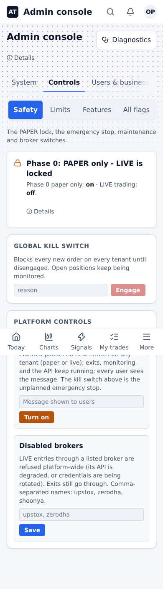
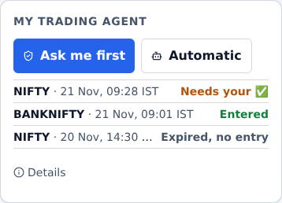
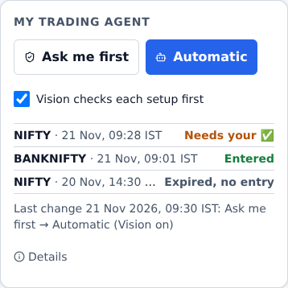
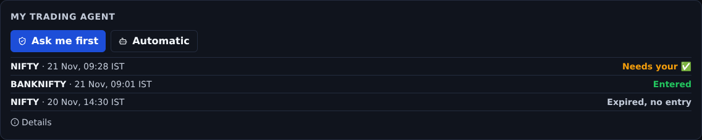
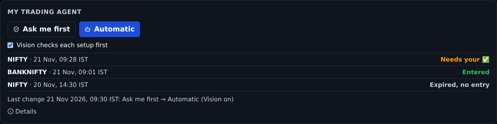

SRV2 P3: the owner's trading agent mode (Admin → Controls → Safety)
Before: no way to pick the mode in ATP. After: one card, only for the owner account. "Automatic" asks for one confirm; every switch is audited.
Before (phone, light)

Controls → Safety: no agent cardAfter

Phone: Ask me first (default)

Phone: after the confirm, Automatic + Vision switch + recent cards + last change

Desktop dark: Ask me first

Desktop dark: Automatic